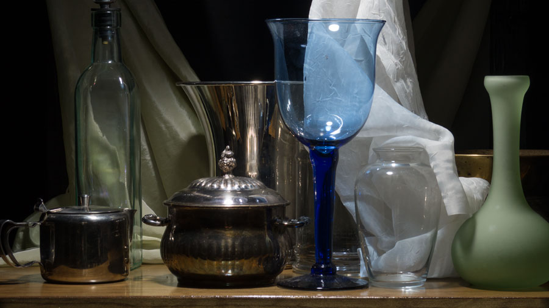

If you work from your own photograph, it's important that you work from a good photograph. It is always preferable to work from life as it does not require that you take a good photo, process it correctly, and make a quality print from it. Life always has perfect color. When taking photographs and making prints, you must know what you are doing or the colors and values will be completely wrong. On this page I will provide as much information as possible to help you photograph, process, print, and laminate a good photo of your subject to paint from, but for many people this is very difficult — and in some cases, it can be expensive.
Before you can determine what size canvas to use, you must set up your still life and decide what to paint. There should be at least three objects in your still life so that you can get the most out of this course and my teaching. Stay away from strong, perfect patterns when choosing subjects for this course — especially patterns that have bright and dark areas in the pattern together. Here are some examples of patterns you should avoid.
On the other hand, there are many items that I see students avoid because they think the items would be too difficult to paint. In fact, things like glass, brass, transparent fabrics, and many other items that seem like they would be difficult to paint are actually very straightforward. Here are some examples of objects that would be relatively easy to paint.

If you work from your own photograph, it's important that you work from a good photograph. It is always preferable to work from life as it does not require that you take a good photo, process it correctly, and make a quality print from it. Life always has perfect color. When taking photographs and making prints, you must know what you are doing or the colors and values will be completely wrong. On this page I will provide as much information as possible to help you photograph, process, print, and laminate a good photo of your subject to paint from, but for many people this is very difficult — and in some cases, it can be expensive.
Take the time to set up a nice still life that you really like — don't settle for something mediocre. If it takes you a few days and 25 attempts to settle on something you're happy with, it will be worth it! Watch this video where I give lots of advice on setting up a still life.
Because you will be working from a photograph instead of working from life, you don't need to build a shadow box like in the video. You can set up a still life on your kitchen counter or wherever you like the light. I would recommend using natural window-light instead of artificial lights. Move your still-life table around your home or studio and explore how the natural light changes. You could even set a table by a window, in a doorway, or an open garage. Or just go out and find your still life already set up — in your pantry, in an antique store window, on your dresser, etc.
A kitchen counter or dining room table is a great place to set up a still life if the light is good. Be sure to make note of how the light changes throughout the day.
You are not required to use a quality photograph to paint from for this course, but do consider the following before deciding what photo you will use.
Ideally an artist wants their source photograph to look like the real thing. That means that the colors and values should be the same in your photo as they are in real life. Unfortunately this is almost never the case. Except for very rare exceptions, all photos taken with modern cameras set to automatic are overexposed and oversaturated.
The degree to which this is true is easier to demonstrate than it is to explain with words. In the photo below I have taken great care in how I photographed the subject, how I processed the image (with Photoshop), and how I printed the image so that the colors and values in the final print closely match those you would see in life.
That's how it should look. However, if you use the automatic mode on your camera, as I did in the photo below…
Although not required for the course, the photo you work from should be enlarged so that objects in the photograph are the same size as they will be when you paint them. That means if you're going to paint a vase four inches wide, the vase in your photo should be four inches wide as well.
This is very helpful and makes it much easier to draw and paint accurately — although it does mean you will likely be working from multiple prints (if your painting is larger than the size of one print).
As you try different setups, be sure to take many, many photos, and then afterwards go through them all and choose your favorite one to paint.
Click here for a simplified guide on how to take photographs to paint from.
If you are an experienced photographer or if you want to get the best possible results, then I highly recommend using our Advanced Photography Guide instead.
Always use glossy photo paper, never satin or matte. Glossy photos have darker blacks than photos with a satin or matte finish.
Because you will be checking your paint colors directly on the photo, you will also need to laminate your print. Be sure to use a crystal clear laminate. Whatever you use or wherever you go to have your photos laminated, do a quick test first: take two copies of a photo and only laminate one of them. Check that the blacks in the photo remain black and do not become "milky". The laminated photo should be indistinguishable from the photo that has not been laminated.
It is essential that the photo you work from be positioned right next to your canvas. You should not be looking up or down at your photo, nor should you be having to turn your head more than necessary.
Here is a video where I demonstrate a super easy one you could make yourself, or you can have someone make it for you. The cost of materials is very small.